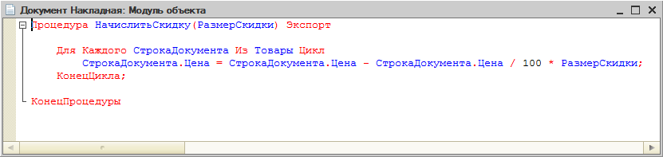
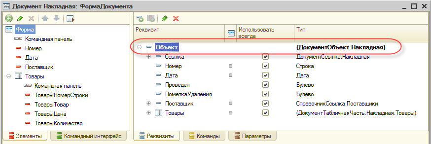

Как выполнить экспортируемую процедуру объекта, находясь в его форме?
Задача, которую будем рассматривать, заключается в вызове экспортируемой процедуры документа. Например, документ имеет процедуру, которая позволяет пересчитать все цены, содержащиеся в табличной части документа, и применить к ним скидку в 10 %. Нужно вызвать эту процедуру, находясь в форме документа.

Для вызова такой процедуры необходимо прежде всего иметь сам объект документа, но прикладные объекты существуют только на сервере. На клиенте их нет. Поэтому поступим следующим образом.
Выполним контекстный серверный вызов. На сервере преобразуем основной реквизит формы в прикладной объект, выполним экспортируемую функцию этого объекта и преобразуем объект обратно в основной реквизит формы.

В результате выполненные на сервере изменения данных формы будут автоматически переданы на клиента, когда на него вернется выполнение программного кода.
Например, локальная команда формы, вызывающая серверную процедуру, будет выглядеть следующим образом:
&НаКлиенте
Процедура ПересчитатьЦеныДокумента(Команда)
ПересчитатьЦеныНаСервере();
КонецПроцедуры
Контекстная серверная функция ПересчитатьЦеныНаСервере() будет выглядеть следующим образом:
&НаСервере
Процедура ПересчитатьЦеныНаСервере()
ОбъектДокумента = РеквизитФормыВЗначение("Объект", Тип("ДокументОбъект.Накладная"));
ОбъектДокумента.НачислитьСкидку(10);
ЗначениеВРеквизитФормы(ОбъектДокумента, "Объект");
КонецПроцедуры
В этой функции сначала мы преобразуем данные реквизита формы Объект в прикладной объект типа ДокументОбъект.Накладная.
После этого мы вызовем экспортируемую процедуру этого прикладного объекта – НачислитьСкидку(). В результате ее работы все цены, содержащиеся в табличной части объекта, будут уменьшены на 10 %.
Затем мы преобразуем данные прикладного объекта обратно в реквизит формы Объект. То есть новые цены в табличной части теперь будут и в форме, которая пока находится на сервере.
Когда выполнение всех серверных процедур, которые мы вызвали, будет закончено, контекст формы на сервере будет собран, отправлен на клиента и там автоматически обновлен. В результате мы увидим в открытом документе на клиенте уже новые цены в табличной части документа.